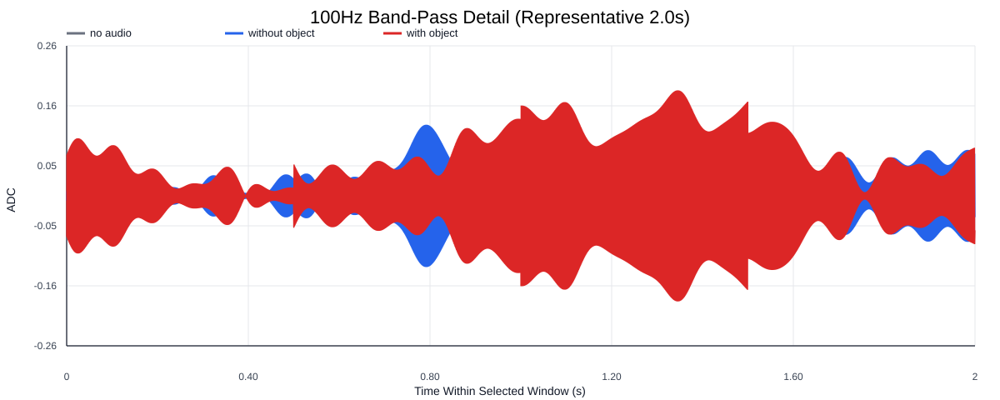
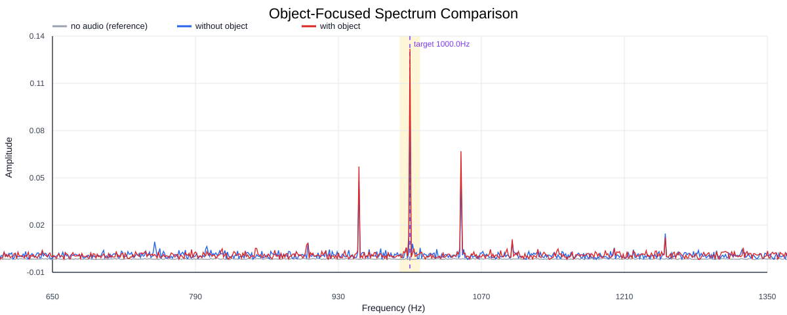
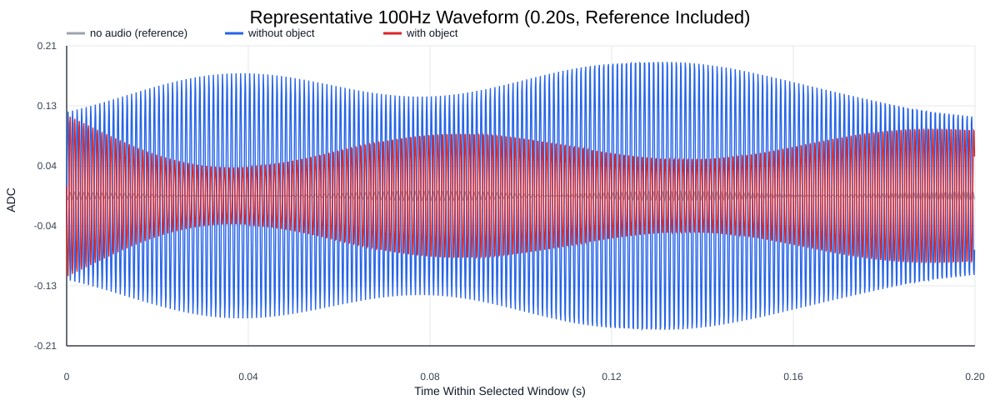
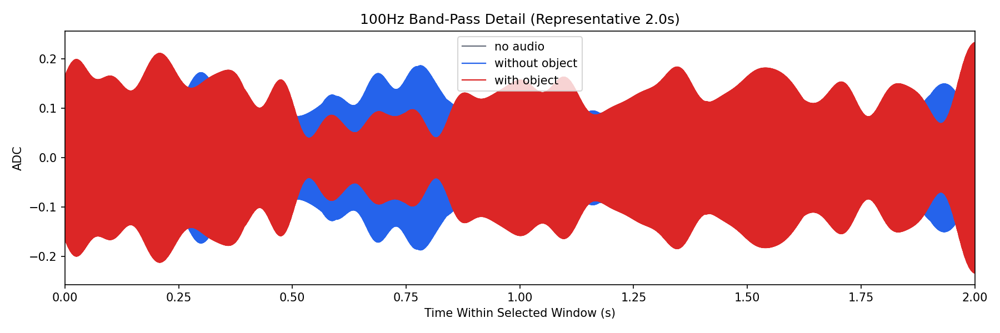
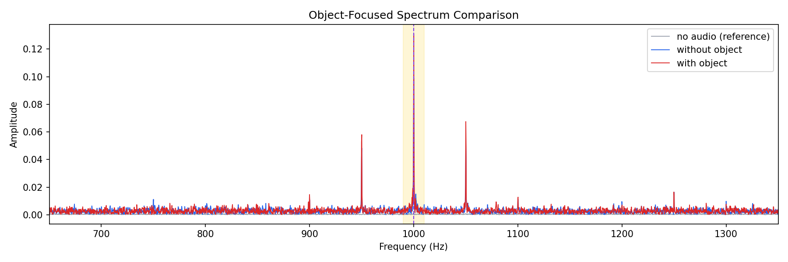
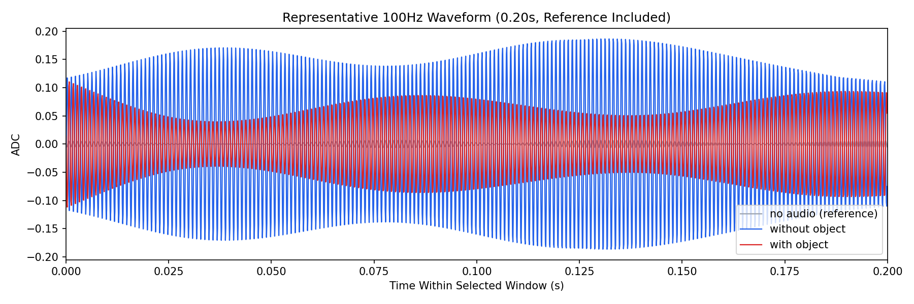

Background: F:\项目类文件夹\异物检测4.10\Data_Dual\frequency_sweep\1000Hz\repeat_02\raw\no_audio.csv
Without object: F:\项目类文件夹\异物检测4.10\Data_Dual\frequency_sweep\1000Hz\repeat_02\raw\without_object.csv
With object: F:\项目类文件夹\异物检测4.10\Data_Dual\frequency_sweep\1000Hz\repeat_02\raw\with_object.csv
| Metric | 无音频 | 100Hz无异物 | 100Hz有异物 | 无异物/无音频 | 有异物/无异物 | 有异物/无音频 |
|---|---|---|---|---|---|---|
| centered_rms | 0.054319 | 0.277791 | 0.313672 | 5.1140 | 1.1292 | 5.7746 |
| raw_target_amp | 0.000453 | 0.098897 | 0.131248 | 218.5062 | 1.3271 | 289.9815 |
| filtered_rms | 0.003996 | 0.074796 | 0.097571 | 18.7175 | 1.3045 | 24.4168 |
| filtered_target_amp | 0.000453 | 0.098897 | 0.131248 | 218.5061 | 1.3271 | 289.9815 |
| filtered_energy_ratio | 0.005412 | 0.072498 | 0.096759 | 13.3958 | 1.3347 | 17.8787 |
| window_filtered_target_amp_mean | 0.003906 | 0.100953 | 0.131493 | 25.8477 | 1.3025 | 33.6670 |
| window_filtered_target_amp_std | 0.003834 | 0.030548 | 0.041672 | 7.9676 | 1.3642 | 10.8690 |





